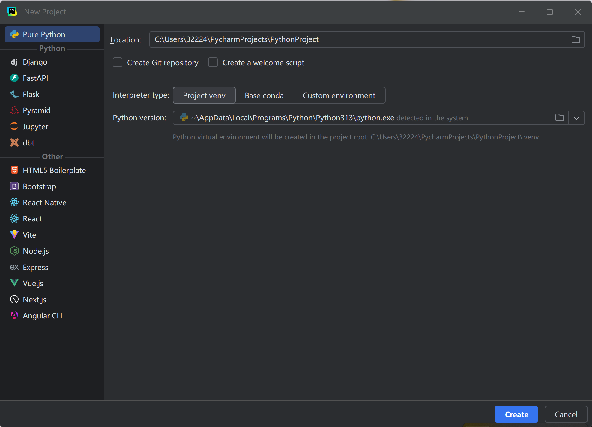
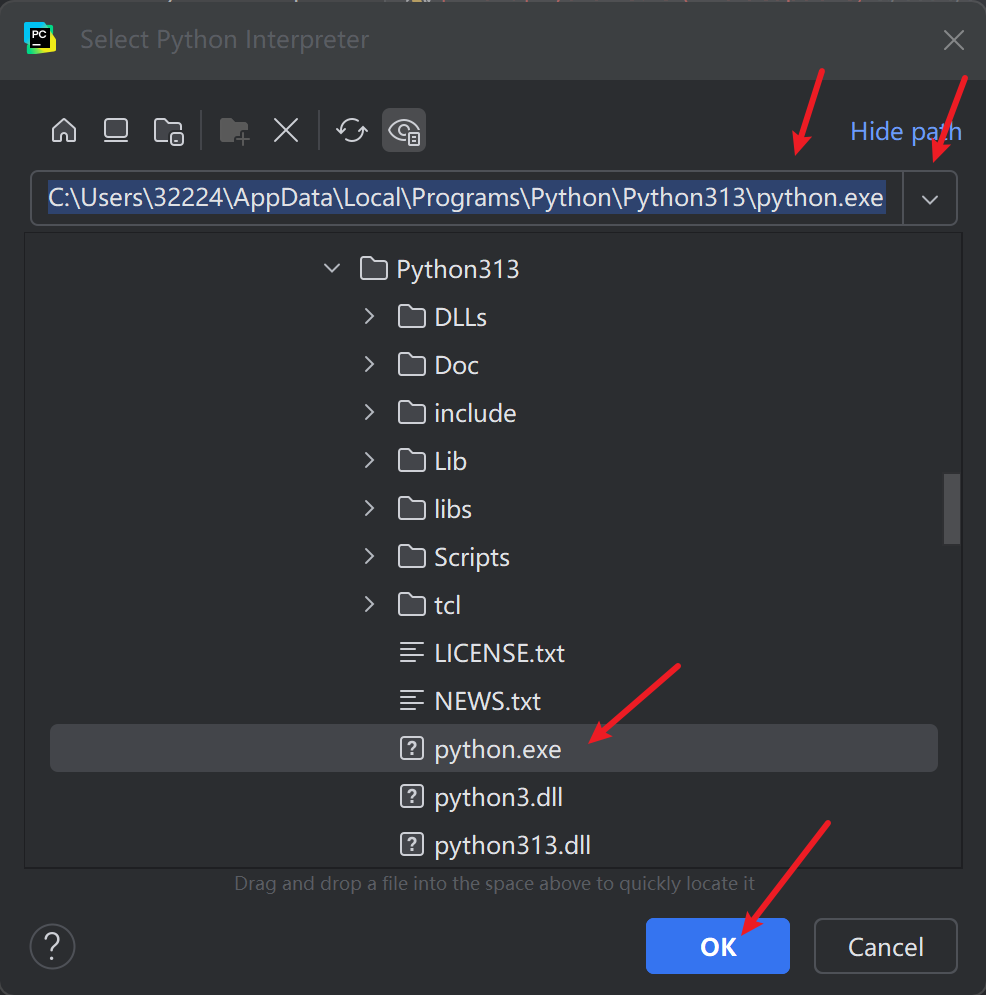
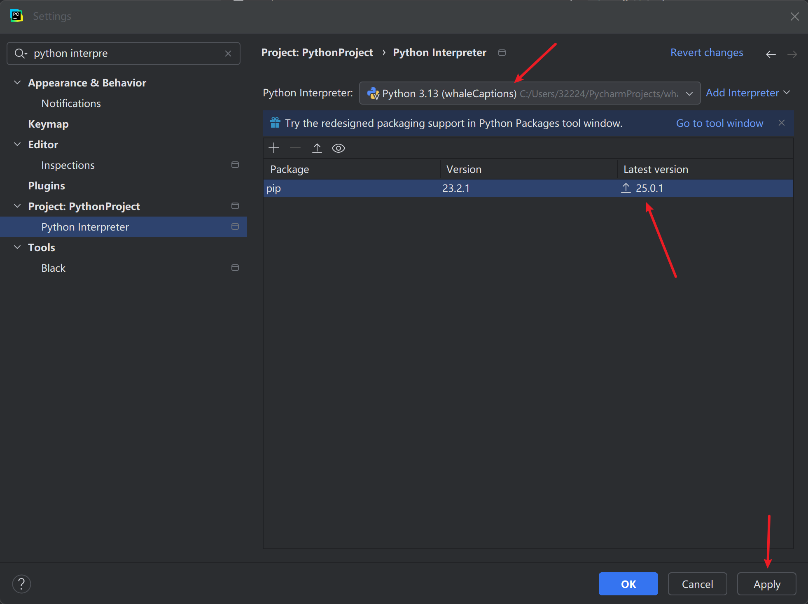
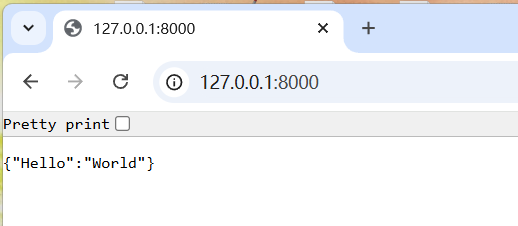

编写一个字幕网站（一）
目的
写一个付费网站，功能是上传一个没有字幕的视频，提供下载带有字幕的视频mp4以及字幕文件。
第一步，环境搭建
安装IntelliJ IDEA Utimate；
PyCharm Professional（是写后端代码的）；
WebStorm(是写前端代码的)；
Visual Studio；
Cygwin
安装python，配置windows环境变量
2.1 配置pycharm
点击new project，开始创建新项目

它的默认文件名是PythonProject，所以我们需要对它进行重命名
核心代码一般命名为main.py，这样看到的人一下就知道是主要的代码了。
2.2 安装python库





配置好了python和pip,就可以使用pip install -r 命令，从requirement.txt中安装需要的python库了。
第二步，先写后端代码
2.1 将mp4转换为srt字幕文件
目的： 使用python，接受mp4视频文件的输入，生成字幕文件以及有字幕的视频文件
编写并调试核心代码
之前gpt写了一段代码，可以将mp4转换为srt字幕文件
https://raw.githubusercontent.com/whale3070/freeA2B/refs/heads/main/mp4_srt.py
用GPT生成一个demo，提示词如下：
使用过whisper和python，生成接受mp4视频文件的输入，生成字幕文件以及有字幕的视频文件。整成一个一键命令行工具
pip install -U openai-whisper
pip install moviepy ffmpeg-python
以下是GPT生成的：
1 | |
2.2 编写api接口
目的： 使用Fastapi，用python写一个api接口，web接受mp4视频文件上传，并传到后端代码，进行字幕处理等操作。
https://www.runoob.com/fastapi/fastapi-tutorial.html
🌟 FastAPI 是什么？
FastAPI 是一个用 Python 写的、用来写 Web API 的现代 Web 框架。
简单说：
- 如果你想用 Python 写网站、写后端接口给前端/APP调用
- 又想写得快、性能高、代码优雅
- 那 FastAPI 就是为你准备的！
🌱 和 Flask / Django 有什么不一样？
| 框架 | 主要特点 |
|---|---|
| Django | 全家桶，集成了ORM、管理后台、模板，适合传统Web网站 |
| Flask | 简单灵活，轻量级，适合小型项目或自定义项目 |
| FastAPI | 超快、现代、类型提示友好，自动生成文档，专注API开发 |
👉 如果你之前学过 Flask，可以理解成：
FastAPI 是个比 Flask 更快、更现代、更好用、更适合写前后端分离接口的版本。
🚀 FastAPI 的优点
- 超高性能：底层基于
Starlette和Uvicorn，性能接近 Node.js 和 Go - 自动生成接口文档：
- 访问
http://localhost:8000/docs👉 就有漂亮的Swagger文档页面 - 还支持
http://localhost:8000/redoc
- 访问
- 支持 Python 3.7+ 类型提示
- 写代码的时候，Pydantic 帮你自动校验参数类型、自动补全，写起来特别舒服
- 异步支持：
- 可以直接用
async def写异步接口，性能暴增
- 可以直接用
🎨 一个简单的例子
安装：
1 | |
写个 main.py
1 | |
启动服务：
1 | |
然后访问：


接下来编写main.py，import mp4_srt.py
mp4_str.py就是步骤2.1写好的mp4视频生成srt字幕的python脚本
main.py调用uvicorn和fastapi,mp4_srt
从http请求，用post方法上传mp4视频
这样就可以写一个api接口
📌 应用场景
- 写 APP 后端接口
- 写前后端分离的 Web 项目
- 写 AI、机器学习项目的 API 服务（特别流行）
- 写高性能微服务架构
第三步，写前端代码
目的： 使用WebStorm, vue，生成网页，指定mp4文件并上传。
3.1 安装 Node.js 和 npm：
访问 Node.js 官方网站：
进入 Node.js 官方网站，并下载适合你操作系统的最新版本（LTS 版本推荐）。安装 Node.js 和 npm：
- 下载并运行安装程序，按照安装向导的步骤进行安装。
- 安装完成后，打开命令行终端，输入以下命令检查 Node.js 和 npm 是否正确安装：
1
2node -v
npm -v这会显示已安装的 Node.js 和 npm 版本。
安装 Vue CLI：
安装完 Node.js 和 npm 后，你就可以安装 Vue CLI 了。运行以下命令：
1 | |
这会全局安装 Vue CLI，使你能够在命令行中使用 vue 命令。
验证安装：
安装完成后，你可以通过以下命令验证 Vue CLI 是否安装成功：
1 | |
这将显示你安装的 Vue CLI 版本。
后续步骤：
创建 Vue 项目：
现在你可以通过以下命令创建一个新的 Vue 项目：1
vue create vue-video-upload进入项目目录：
1
cd vue-video-upload启动项目：
启动开发服务器：1
npm run serve
这样，你就可以在浏览器中访问 Vue 项目并进行开发了。

第四步，打包到docker
4.1 下载docker镜像
docker pull python:3.12.10-bookworm
4.2 写dockerfile
目的是生成自己的image
当应用程序出现问题的时候，就可以已有的image进行重建容器
1 | |
这段 Dockerfile 是用来构建一个基于 Python 的应用程序的 Docker 镜像的脚本。以下是对每一行代码的详细解释：
1. ARG BASE_VERSION
- 作用：定义一个构建参数
BASE_VERSION。 - 解释：
ARG指令用于定义一个变量，可以在构建过程中通过命令行参数覆盖它的值。这里定义了一个变量BASE_VERSION，但没有直接使用它，可能是为了在后续版本中动态指定基础镜像版本。
2. FROM whalecaptions-converter-service-base:20250409
- 作用：指定基础镜像。
- 解释：
FROM指令用于指定构建新镜像所基于的父镜像。这里使用了一个名为whalecaptions-converter-service-base的镜像，版本为20250409。这意味着新镜像是在这个基础镜像之上构建的，继承了基础镜像中的所有内容（如操作系统、预装软件等）。
3. RUN apt-get update; apt-get install fonts-wqy-zenhei fonts-wqy-microhei
- 作用：更新系统包列表并安装指定的字体。
- 解释：
apt-get update：更新系统的包索引，确保后续安装的软件包是最新的。apt-get install fonts-wqy-zenhei fonts-wqy-microhei：安装两种中文字体（文泉驿正黑和文泉驿微米黑），这可能是为了支持程序中对中文的显示或处理。
4. WORKDIR /app
- 作用：设置工作目录。
- 解释：
WORKDIR指令用于设置后续指令的工作目录。这里将工作目录设置为/app，后续的COPY、RUN等指令都会在这个目录下执行。这有助于组织容器内的文件结构。
5. COPY . /app
- 作用：将当前目录下的所有文件复制到容器的
/app目录中。 - 解释：
COPY指令用于将宿主机上的文件或目录复制到容器中。这里将当前目录（构建上下文目录）下的所有文件和子目录复制到容器的/app目录中。这通常用于将应用程序代码、配置文件等复制到容器中。
6. COPY docker/ffmpeg /usr/bin
- 作用：将宿主机上的
ffmpeg可执行文件复制到容器的/usr/bin目录中。 - 解释：
COPY指令再次被使用，将一个名为ffmpeg的可执行文件从宿主机的docker/目录复制到容器的/usr/bin目录中。ffmpeg是一个常用的多媒体处理工具，可能被应用程序依赖。
7. RUN chmod +x /usr/bin/ffmpeg
- 作用：为
ffmpeg可执行文件添加执行权限。 - 解释：
chmod +x是 Linux 命令，用于为文件添加执行权限。这里确保ffmpeg在容器中可以被正常执行。
8. EXPOSE 8089
- 作用：声明容器运行时会监听的端口。
- 解释：
EXPOSE指令用于声明容器在运行时会监听的端口。这里声明容器会监听 8089 端口，这通常是应用程序对外提供服务的端口（例如 HTTP 服务）。不过，这只是一个声明，实际的端口映射需要在运行容器时通过-p参数指定。
9. CMD ["python", "/app/src/main/main.py"]
- 作用：指定容器启动后执行的命令。
- 解释：
CMD指令用于指定容器启动时默认执行的命令。这里指定容器启动后会运行/app/src/main/main.py文件，这是一个 Python 脚本。这表明应用程序的核心逻辑在main.py文件中。
10. #CMD ["sleep", "infinity"]
- 作用：被注释掉的命令。
- 解释：这是一个被注释掉的
CMD指令，原本的作用是让容器启动后执行sleep infinity命令，即让容器保持运行状态，但不执行任何实际的业务逻辑。这通常用于调试或测试目的，确保容器能够启动但不会立即退出。
总结
这段 Dockerfile 的主要功能是：
- 基于一个指定的基础镜像。
- 安装必要的字体和工具（如
ffmpeg）。 - 将应用程序代码和相关文件复制到容器中。
- 设置工作目录和执行权限。
- 声明容器监听的端口。
- 指定容器启动后运行的程序。
通过这个 Dockerfile，可以将应用程序打包成一个独立的容器镜像，方便部署和运行。
运行程序
CMD [“python”, “/app/src/main/main.py”]
#CMD [“sleep”, “infinity”]
第五步，购买域名、vps并部署到服务器
部署
docker images
docker commit 93ae94bd08d3 frontend:latest #将正在运行的容器container保存为镜像image
docker save -o fronted.tar frontend:latest #将镜像保存为tar存档
将fronted.tar迁移到服务器
docker load -i fronted.tar
docker images 查看一下，这样就导入成功了
docker run -d -p 8089:8089 backend:latest
docker run -d -p 5173:5173 frontend:latest
访问服务器：http://192.168.5.1:8089/
可以正常使用